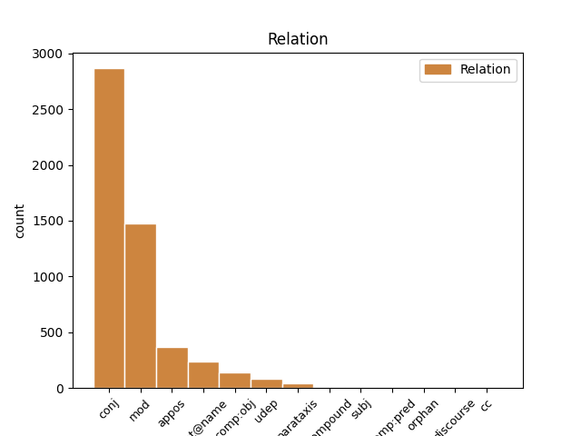
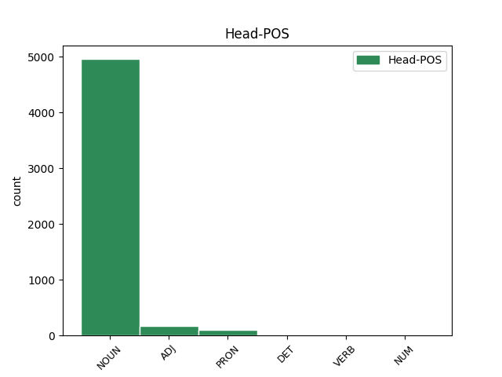
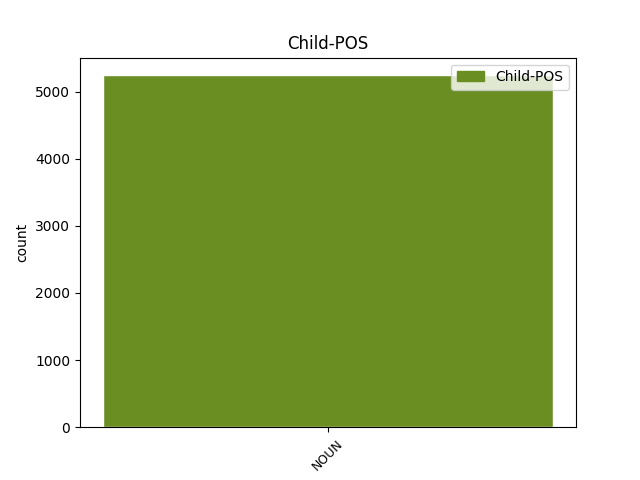

Distribution of features within this leaf



Agreement Rules sorted by frequency.
- When the dependent token is the conjunct(conj) of the head token, and the dependent token is NOUN.
1 Der _ _ _ _ 0 _ _ _
2 sit _ _ _ _ 0 _ _ _
3 dei _ _ _ _ 0 _ _ _
4 klare _ _ _ _ 0 _ _ _
5 til _ _ _ _ 0 _ _ _
6 å _ _ _ _ 0 _ _ _
7 hjelpe _ _ _ _ 0 _ _ _
8 til _ _ _ _ 0 _ _ _
9 med _ _ _ _ 0 _ _ _
10 alt _ _ _ _ 0 _ _ _
11 frå _ _ _ _ 0 _ _ _
12 gnagsår gnagsår NOUN _ Definite=Ind|Gender=Neut|Number=Plur 0 _ _ _
13 og _ _ _ _ 0 _ _ _
14 solbrente _ _ _ _ 0 _ _ _
15 andlet andlet NOUN _ Definite=Ind|Gender=Neut|Number=Plur 12 conj _ _
16 til _ _ _ _ 0 _ _ _
17 å _ _ _ _ 0 _ _ _
18 rykke _ _ _ _ 0 _ _ _
19 ut _ _ _ _ 0 _ _ _
20 for _ _ _ _ 0 _ _ _
21 å _ _ _ _ 0 _ _ _
22 leite _ _ _ _ 0 _ _ _
23 etter _ _ _ _ 0 _ _ _
24 personar _ _ _ _ 0 _ _ _
25 som _ _ _ _ 0 _ _ _
26 ikkje _ _ _ _ 0 _ _ _
27 har _ _ _ _ 0 _ _ _
28 kome _ _ _ _ 0 _ _ _
29 heim _ _ _ _ 0 _ _ _
30 att _ _ _ _ 0 _ _ _
31 til _ _ _ _ 0 _ _ _
32 avtalt _ _ _ _ 0 _ _ _
33 tid _ _ _ _ 0 _ _ _
34 . _ _ _ _ 0 _ _ _
1 I _ _ _ _ 0 _ _ _
2 tillegg _ _ _ _ 0 _ _ _
3 set _ _ _ _ 0 _ _ _
4 laget _ _ _ _ 0 _ _ _
5 kvart _ _ _ _ 0 _ _ _
6 år _ _ _ _ 0 _ _ _
7 opp _ _ _ _ 0 _ _ _
8 ein _ _ _ _ 0 _ _ _
9 lavvo _ _ _ _ 0 _ _ _
10 ved _ _ _ _ 0 _ _ _
11 ein _ _ _ _ 0 _ _ _
12 stein stein NOUN _ Definite=Ind|Gender=Masc|Number=Sing 0 _ _ _
13 som _ _ _ _ 0 _ _ _
14 heiter _ _ _ _ 0 _ _ _
15 « _ _ _ _ 0 _ _ _
16 Grensesteinen _ _ _ _ 0 _ _ _
17 » _ _ _ _ 0 _ _ _
18 om _ _ _ _ 0 _ _ _
19 lag _ _ _ _ 0 _ _ _
20 fem _ _ _ _ 0 _ _ _
21 kilometer kilometer NOUN _ Definite=Ind|Gender=Masc|Number=Plur 12 mod _ _
22 frå _ _ _ _ 0 _ _ _
23 Hallbjønnsekken _ _ _ _ 0 _ _ _
24 på _ _ _ _ 0 _ _ _
25 grensa _ _ _ _ 0 _ _ _
26 mellom _ _ _ _ 0 _ _ _
27 Tokke _ _ _ _ 0 _ _ _
28 og _ _ _ _ 0 _ _ _
29 Fyresdal _ _ _ _ 0 _ _ _
30 . _ _ _ _ 0 _ _ _
1 Ansvarleg _ _ _ _ 0 _ _ _
2 redaktør _ _ _ _ 0 _ _ _
3 og _ _ _ _ 0 _ _ _
4 fagleg _ _ _ _ 0 _ _ _
5 leiar _ _ _ _ 0 _ _ _
6 i _ _ _ _ 0 _ _ _
7 Radio _ _ _ _ 0 _ _ _
8 Rauland _ _ _ _ 0 _ _ _
9 AS _ _ _ _ 0 _ _ _
10 , _ _ _ _ 0 _ _ _
11 Jan Jan NOUN _ Gender=Masc 0 _ _ _
12 Vidar Vidar NOUN _ Gender=Masc 11 flat@name _ _
13 Holte _ _ _ _ 0 _ _ _
14 , _ _ _ _ 0 _ _ _
15 kjem _ _ _ _ 0 _ _ _
16 ikkje _ _ _ _ 0 _ _ _
17 til _ _ _ _ 0 _ _ _
18 å _ _ _ _ 0 _ _ _
19 stanse _ _ _ _ 0 _ _ _
20 dyremeldingstenesta _ _ _ _ 0 _ _ _
21 . _ _ _ _ 0 _ _ _
1 Mange _ _ _ _ 0 _ _ _
2 episodar episode NOUN _ Definite=Ind|Gender=Masc|Number=Plur 0 _ _ _
3 vart _ _ _ _ 0 _ _ _
4 trekte _ _ _ _ 0 _ _ _
5 fram _ _ _ _ 0 _ _ _
6 , _ _ _ _ 0 _ _ _
7 mellom _ _ _ _ 0 _ _ _
8 anna _ _ _ _ 0 _ _ _
9 den _ _ _ _ 0 _ _ _
10 gongen gong NOUN _ Definite=Def|Gender=Masc|Number=Sing 2 appos _ _
11 ho _ _ _ _ 0 _ _ _
12 gjekk _ _ _ _ 0 _ _ _
13 i _ _ _ _ 0 _ _ _
14 1. _ _ _ _ 0 _ _ _
15 mai-tog _ _ _ _ 0 _ _ _
16 i _ _ _ _ 0 _ _ _
17 Kragerø _ _ _ _ 0 _ _ _
18 saman _ _ _ _ 0 _ _ _
19 med _ _ _ _ 0 _ _ _
20 Børre _ _ _ _ 0 _ _ _
21 Rønningen _ _ _ _ 0 _ _ _
22 . _ _ _ _ 0 _ _ _
1 Opprøret _ _ _ _ 0 _ _ _
2 i _ _ _ _ 0 _ _ _
3 Finnmark _ _ _ _ 0 _ _ _
4 kom _ _ _ _ 0 _ _ _
5 overraskande _ _ _ _ 0 _ _ _
6 på _ _ _ _ 0 _ _ _
7 både _ _ _ _ 0 _ _ _
8 statsministeren _ _ _ _ 0 _ _ _
9 og _ _ _ _ 0 _ _ _
10 det _ _ _ _ 0 _ _ _
11 lokale _ _ _ _ 0 _ _ _
12 partilaget _ _ _ _ 0 _ _ _
13 , _ _ _ _ 0 _ _ _
14 og _ _ _ _ 0 _ _ _
15 blei _ _ _ _ 0 _ _ _
16 lagt leggje VERB _ Definite=Ind|Gender=Neut|Number=Sing|VerbForm=Part 0 _ _ _
17 merke merke NOUN _ Definite=Ind|Gender=Neut|Number=Sing 16 comp:obj _ _
18 til _ _ _ _ 0 _ _ _
19 over _ _ _ _ 0 _ _ _
20 heile _ _ _ _ 0 _ _ _
21 landet _ _ _ _ 0 _ _ _
22 . _ _ _ _ 0 _ _ _
1 Statsministeren _ _ _ _ 0 _ _ _
2 rista _ _ _ _ 0 _ _ _
3 på _ _ _ _ 0 _ _ _
4 hovudet _ _ _ _ 0 _ _ _
5 og _ _ _ _ 0 _ _ _
6 lo _ _ _ _ 0 _ _ _
7 med _ _ _ _ 0 _ _ _
8 , _ _ _ _ 0 _ _ _
9 fortalde _ _ _ _ 0 _ _ _
10 Gjernes _ _ _ _ 0 _ _ _
11 for _ _ _ _ 0 _ _ _
12 å _ _ _ _ 0 _ _ _
13 understreke _ _ _ _ 0 _ _ _
14 Ragnvald Ragnvald NOUN _ Gender=Masc 16 udep _ _
15 Skrede _ _ _ _ 0 _ _ _
16 sin sin PRON _ Gender=Masc|Number=Sing|Poss=Yes|PronType=Prs 0 _ _ _
17 påstand _ _ _ _ 0 _ _ _
18 om _ _ _ _ 0 _ _ _
19 at _ _ _ _ 0 _ _ _
20 Vaa _ _ _ _ 0 _ _ _
21 var _ _ _ _ 0 _ _ _
22 den _ _ _ _ 0 _ _ _
23 same _ _ _ _ 0 _ _ _
24 kvar _ _ _ _ 0 _ _ _
25 ho _ _ _ _ 0 _ _ _
26 var _ _ _ _ 0 _ _ _
27 . _ _ _ _ 0 _ _ _
1 Vidare _ _ _ _ 0 _ _ _
2 blir _ _ _ _ 0 _ _ _
3 det _ _ _ _ 0 _ _ _
4 mest _ _ _ _ 0 _ _ _
5 dramatiske _ _ _ _ 0 _ _ _
6 ofte _ _ _ _ 0 _ _ _
7 dempa _ _ _ _ 0 _ _ _
8 av _ _ _ _ 0 _ _ _
9 påfølgande _ _ _ _ 0 _ _ _
10 scen scene NOUN _ Definite=Ind|Gender=Fem|Number=Sing 11 compound _ _
11 er scene NOUN _ Definite=Ind|Gender=Fem|Number=Sing 0 _ _ _
12 som _ _ _ _ 0 _ _ _
13 er _ _ _ _ 0 _ _ _
14 nesten _ _ _ _ 0 _ _ _
15 komisk _ _ _ _ 0 _ _ _
16 kvardagslege _ _ _ _ 0 _ _ _
17 i _ _ _ _ 0 _ _ _
18 forhold _ _ _ _ 0 _ _ _
19 - _ _ _ _ 0 _ _ _
20 i _ _ _ _ 0 _ _ _
21 « _ _ _ _ 0 _ _ _
22 Den _ _ _ _ 0 _ _ _
23 nifse _ _ _ _ 0 _ _ _
24 natta _ _ _ _ 0 _ _ _
25 ! _ _ _ _ 0 _ _ _
26 » _ _ _ _ 0 _ _ _
27 ber _ _ _ _ 0 _ _ _
28 Annika _ _ _ _ 0 _ _ _
29 Ralle _ _ _ _ 0 _ _ _
30 om _ _ _ _ 0 _ _ _
31 å _ _ _ _ 0 _ _ _
32 kjenne _ _ _ _ 0 _ _ _
33 under _ _ _ _ 0 _ _ _
34 genseren _ _ _ _ 0 _ _ _
35 hennar _ _ _ _ 0 _ _ _
36 i _ _ _ _ 0 _ _ _
37 ei _ _ _ _ 0 _ _ _
38 av _ _ _ _ 0 _ _ _
39 dei _ _ _ _ 0 _ _ _
40 nærast _ _ _ _ 0 _ _ _
41 påfølgande _ _ _ _ 0 _ _ _
42 rutene _ _ _ _ 0 _ _ _
43 etter _ _ _ _ 0 _ _ _
44 at _ _ _ _ 0 _ _ _
45 mor _ _ _ _ 0 _ _ _
46 er _ _ _ _ 0 _ _ _
47 sendt _ _ _ _ 0 _ _ _
48 på _ _ _ _ 0 _ _ _
49 sjukehus _ _ _ _ 0 _ _ _
50 og _ _ _ _ 0 _ _ _
51 far _ _ _ _ 0 _ _ _
52 til _ _ _ _ 0 _ _ _
53 politistasjonen _ _ _ _ 0 _ _ _
54 . _ _ _ _ 0 _ _ _
1 God _ _ _ _ 0 _ _ _
2 tur tur NOUN _ Definite=Ind|Gender=Masc|Number=Sing 0 _ _ _
3 , _ _ _ _ 0 _ _ _
4 karar kar NOUN _ Definite=Ind|Gender=Masc|Number=Plur 2 parataxis _ SpaceAfter=No
5 ! _ _ _ _ 0 _ _ _
1 Helikopter helikopter NOUN _ Definite=Ind|Gender=Neut|Number=Sing 2 subj _ _
2 stansa stanse ADJ _ Definite=Ind|Gender=Neut|Number=Sing|VerbForm=Part 0 _ _ _
3 av _ _ _ _ 0 _ _ _
4 rein _ _ _ _ 0 _ _ _
1 Henry Henry NOUN _ Gender=Masc 0 _ _ _
2 Mæland _ _ _ _ 0 _ _ _
3 ny _ _ _ _ 0 _ _ _
4 dyrsku-general dyrsku-general NOUN _ Definite=Ind|Gender=Masc|Number=Sing 1 comp:pred _ _
1 Vidare _ _ _ _ 0 _ _ _
2 fekk _ _ _ _ 0 _ _ _
3 Noralv _ _ _ _ 0 _ _ _
4 Distad _ _ _ _ 0 _ _ _
5 ( _ _ _ _ 0 _ _ _
6 Høgre _ _ _ _ 0 _ _ _
7 ) _ _ _ _ 0 _ _ _
8 890 _ _ _ _ 0 _ _ _
9 personrøyster _ _ _ _ 0 _ _ _
10 , _ _ _ _ 0 _ _ _
11 Kjell _ _ _ _ 0 _ _ _
12 Magne _ _ _ _ 0 _ _ _
13 Åshamar _ _ _ _ 0 _ _ _
14 ( _ _ _ _ 0 _ _ _
15 Senterpartiet _ _ _ _ 0 _ _ _
16 ) _ _ _ _ 0 _ _ _
17 823 _ _ _ _ 0 _ _ _
18 , _ _ _ _ 0 _ _ _
19 Nils Nils NOUN _ Gender=Masc 0 _ _ _
20 Petter Petter NOUN _ Gender=Masc 19 orphan _ _
21 Støyva _ _ _ _ 0 _ _ _
22 ( _ _ _ _ 0 _ _ _
23 Arbeidarpartiet _ _ _ _ 0 _ _ _
24 ) _ _ _ _ 0 _ _ _
25 767 _ _ _ _ 0 _ _ _
26 . _ _ _ _ 0 _ _ _
1 Svein Svein NOUN _ Gender=Masc 0 _ _ _
2 Tang _ _ _ _ 0 _ _ _
3 Wa _ _ _ _ 0 _ _ _
4 ( _ _ _ _ 0 _ _ _
5 song _ _ _ _ 0 _ _ _
6 ) _ _ _ _ 0 _ _ _
7 Gunnar Gunnar NOUN _ Gender=Masc 1 cc _ _
8 Roaldkvam _ _ _ _ 0 _ _ _
9 ( _ _ _ _ 0 _ _ _
10 tekst _ _ _ _ 0 _ _ _
11 ) _ _ _ _ 0 _ _ _
12 Ragnar _ _ _ _ 0 _ _ _
13 Bjerkreim _ _ _ _ 0 _ _ _
14 ( _ _ _ _ 0 _ _ _
15 tone _ _ _ _ 0 _ _ _
16 ) _ _ _ _ 0 _ _ _
17 West _ _ _ _ 0 _ _ _
18 Audio _ _ _ _ 0 _ _ _
19 Productions _ _ _ _ 0 _ _ _
Disagree Examples:
1 Det _ _ _ _ 0 _ _ _
2 er _ _ _ _ 0 _ _ _
3 eigentleg _ _ _ _ 0 _ _ _
4 veldig _ _ _ _ 0 _ _ _
5 spennande _ _ _ _ 0 _ _ _
6 å _ _ _ _ 0 _ _ _
7 lese _ _ _ _ 0 _ _ _
8 Kol _ _ _ _ 0 _ _ _
9 no _ _ _ _ 0 _ _ _
10 som _ _ _ _ 0 _ _ _
11 eg _ _ _ _ 0 _ _ _
12 har _ _ _ _ 0 _ _ _
13 liksom _ _ _ _ 0 _ _ _
14 utvikla _ _ _ _ 0 _ _ _
15 meg _ _ _ _ 0 _ _ _
16 og _ _ _ _ 0 _ _ _
17 gått _ _ _ _ 0 _ _ _
18 mange _ _ _ _ 0 _ _ _
19 rundar _ _ _ _ 0 _ _ _
20 på _ _ _ _ 0 _ _ _
21 andre _ _ _ _ 0 _ _ _
22 område _ _ _ _ 0 _ _ _
23 , _ _ _ _ 0 _ _ _
24 i _ _ _ _ 0 _ _ _
25 forståing forståing NOUN _ Definite=Ind|Gender=Fem|Number=Sing 0 _ _ _
26 av _ _ _ _ 0 _ _ _
27 GT _ _ _ _ 0 _ _ _
28 , _ _ _ _ 0 _ _ _
29 historisk-kritikk historisk-kritikk NOUN _ Definite=Ind|Gender=Neut|Number=Sing 25 conj _ SpaceAfter=No
30 , _ _ _ _ 0 _ _ _
31 kristen _ _ _ _ 0 _ _ _
32 filosofi _ _ _ _ 0 _ _ _
33 i _ _ _ _ 0 _ _ _
34 antikken _ _ _ _ 0 _ _ _
35 etc. _ _ _ _ 0 _ _ _
36 etc _ _ _ _ 0 _ _ _
1 Det _ _ _ _ 0 _ _ _
2 er _ _ _ _ 0 _ _ _
3 eigentleg _ _ _ _ 0 _ _ _
4 veldig _ _ _ _ 0 _ _ _
5 spennande _ _ _ _ 0 _ _ _
6 å _ _ _ _ 0 _ _ _
7 lese _ _ _ _ 0 _ _ _
8 Kol _ _ _ _ 0 _ _ _
9 no _ _ _ _ 0 _ _ _
10 som _ _ _ _ 0 _ _ _
11 eg _ _ _ _ 0 _ _ _
12 har _ _ _ _ 0 _ _ _
13 liksom _ _ _ _ 0 _ _ _
14 utvikla _ _ _ _ 0 _ _ _
15 meg _ _ _ _ 0 _ _ _
16 og _ _ _ _ 0 _ _ _
17 gått _ _ _ _ 0 _ _ _
18 mange _ _ _ _ 0 _ _ _
19 rundar _ _ _ _ 0 _ _ _
20 på _ _ _ _ 0 _ _ _
21 andre _ _ _ _ 0 _ _ _
22 område _ _ _ _ 0 _ _ _
23 , _ _ _ _ 0 _ _ _
24 i _ _ _ _ 0 _ _ _
25 forståing _ _ _ _ 0 _ _ _
26 av _ _ _ _ 0 _ _ _
27 GT _ _ _ _ 0 _ _ _
28 , _ _ _ _ 0 _ _ _
29 historisk-kritikk historisk-kritikk NOUN _ Definite=Ind|Gender=Neut|Number=Sing 0 _ _ _
30 , _ _ _ _ 0 _ _ _
31 kristen _ _ _ _ 0 _ _ _
32 filosofi filosofi NOUN _ Definite=Ind|Gender=Masc|Number=Sing 29 conj _ _
33 i _ _ _ _ 0 _ _ _
34 antikken _ _ _ _ 0 _ _ _
35 etc. _ _ _ _ 0 _ _ _
36 etc _ _ _ _ 0 _ _ _
1 Kan _ _ _ _ 0 _ _ _
2 eg _ _ _ _ 0 _ _ _
3 sjå _ _ _ _ 0 _ _ _
4 for _ _ _ _ 0 _ _ _
5 meg _ _ _ _ 0 _ _ _
6 dei _ _ _ _ 0 _ _ _
7 gresk-romerske _ _ _ _ 0 _ _ _
8 gatene gate NOUN _ Definite=Def|Gender=Fem|Number=Plur 0 _ _ _
9 , _ _ _ _ 0 _ _ _
10 handelstorga handelstorg NOUN _ Definite=Def|Gender=Neut|Number=Plur 8 conj _ SpaceAfter=No
11 , _ _ _ _ 0 _ _ _
12 klubbane _ _ _ _ 0 _ _ _
13 etc. _ _ _ _ 0 _ _ _
14 - _ _ _ _ 0 _ _ _
15 og _ _ _ _ 0 _ _ _
16 Paulus _ _ _ _ 0 _ _ _
17 som _ _ _ _ 0 _ _ _
18 sit _ _ _ _ 0 _ _ _
19 og _ _ _ _ 0 _ _ _
20 skriv _ _ _ _ 0 _ _ _
21 ? _ _ _ _ 0 _ _ _
1 Kan _ _ _ _ 0 _ _ _
2 eg _ _ _ _ 0 _ _ _
3 sjå _ _ _ _ 0 _ _ _
4 for _ _ _ _ 0 _ _ _
5 meg _ _ _ _ 0 _ _ _
6 dei _ _ _ _ 0 _ _ _
7 gresk-romerske _ _ _ _ 0 _ _ _
8 gatene _ _ _ _ 0 _ _ _
9 , _ _ _ _ 0 _ _ _
10 handelstorga handelstorg NOUN _ Definite=Def|Gender=Neut|Number=Plur 0 _ _ _
11 , _ _ _ _ 0 _ _ _
12 klubbane klubb NOUN _ Definite=Def|Gender=Masc|Number=Plur 10 conj _ _
13 etc. _ _ _ _ 0 _ _ _
14 - _ _ _ _ 0 _ _ _
15 og _ _ _ _ 0 _ _ _
16 Paulus _ _ _ _ 0 _ _ _
17 som _ _ _ _ 0 _ _ _
18 sit _ _ _ _ 0 _ _ _
19 og _ _ _ _ 0 _ _ _
20 skriv _ _ _ _ 0 _ _ _
21 ? _ _ _ _ 0 _ _ _
1 Dei _ _ _ _ 0 _ _ _
2 må _ _ _ _ 0 _ _ _
3 naturlegvis _ _ _ _ 0 _ _ _
4 minnast _ _ _ _ 0 _ _ _
5 om _ _ _ _ 0 _ _ _
6 ting _ _ _ _ 0 _ _ _
7 , _ _ _ _ 0 _ _ _
8 men _ _ _ _ 0 _ _ _
9 poenget _ _ _ _ 0 _ _ _
10 er _ _ _ _ 0 _ _ _
11 at _ _ _ _ 0 _ _ _
12 breva _ _ _ _ 0 _ _ _
13 til _ _ _ _ 0 _ _ _
14 Paulus _ _ _ _ 0 _ _ _
15 tek _ _ _ _ 0 _ _ _
16 opp _ _ _ _ 0 _ _ _
17 konkrete _ _ _ _ 0 _ _ _
18 ting _ _ _ _ 0 _ _ _
19 , _ _ _ _ 0 _ _ _
20 situasjonar situasjon NOUN _ Definite=Ind|Gender=Masc|Number=Plur 0 _ _ _
21 , _ _ _ _ 0 _ _ _
22 problem problem NOUN _ Definite=Ind|Gender=Neut|Number=Plur 20 conj _ SpaceAfter=No
23 . _ _ _ _ 0 _ _ _